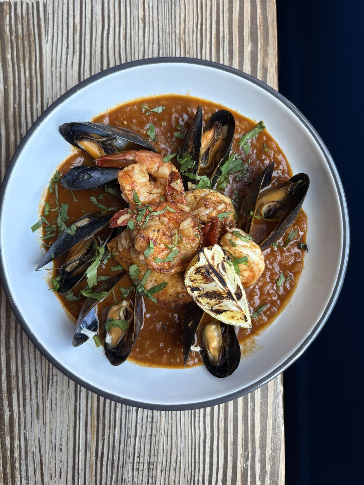
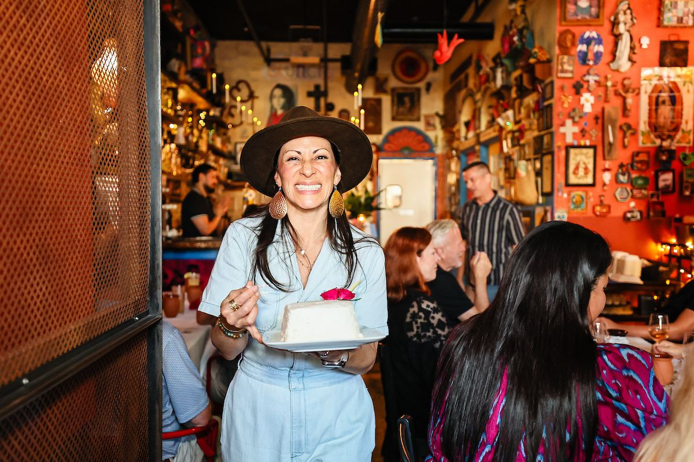
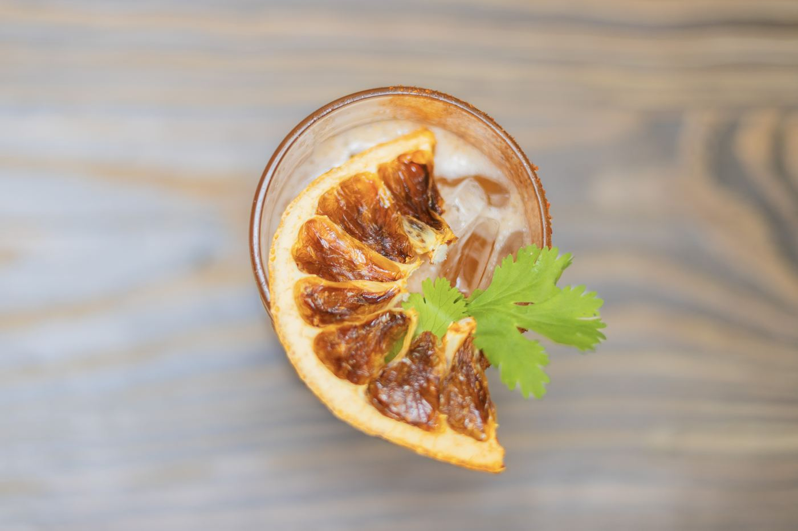
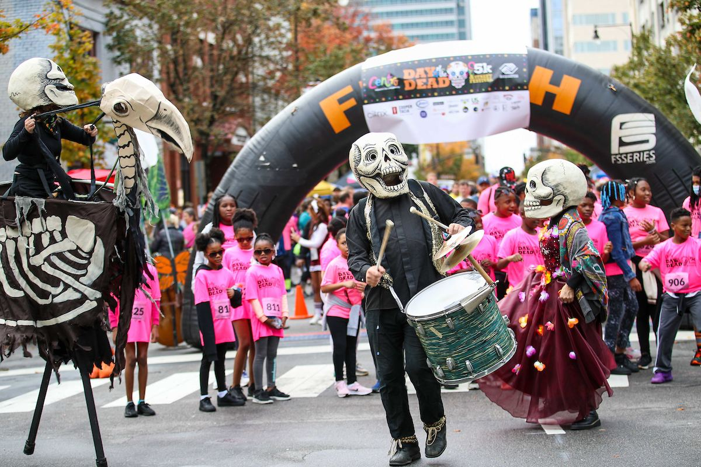
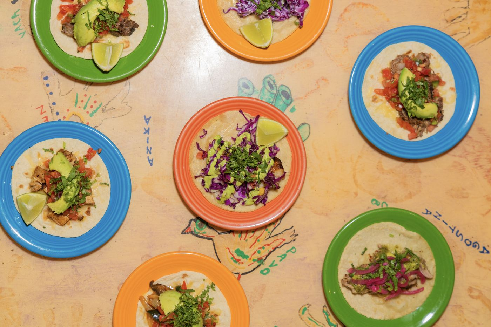
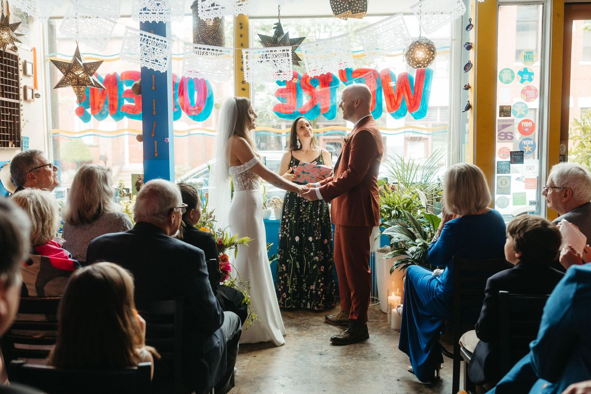
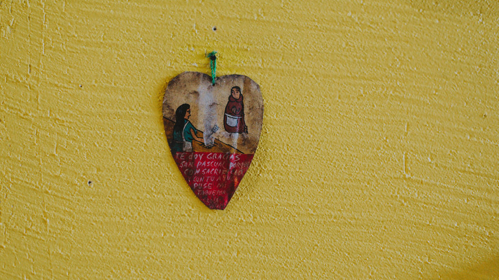
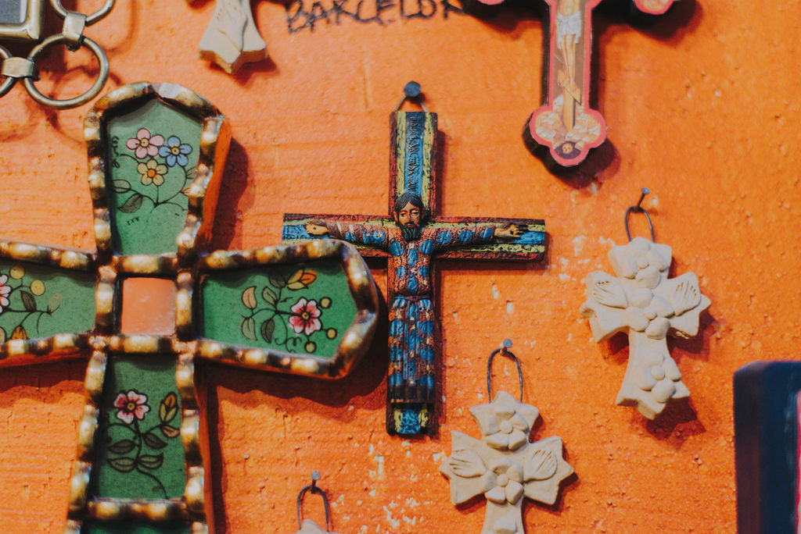

106 S Wilmington St · Downtown Raleigh
Fresh Mexican. Downtown energy.
Founded in 2007 by Angela Salamanca, Centro is a downtown Raleigh staple — grab-and-go lunch, full-service dinner, and catering that actually feels like a party.
Why this preview
Your live site is still a Wix restaurant shell.
centroraleigh.com works — but Wix pages bury Toast order, reservations, and contact behind heavy chrome on phones. This sample keeps your real Toast order link, Toast tables, phone, info@ email, hours, and food photos — just faster to tap.

Plates
Cocktails
Tacos
DinnerOfferings
Lunch. Dinner. Catering.


